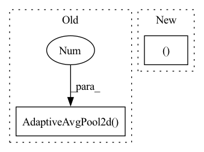

Pattern ID :17832
Before Change
nn.BatchNorm2d(3),
*list(resnet.children())[:-1],
nn.Conv2d(last_conv_channels, num_ftrs, 1),
nn.AdaptiveAvgPool2d(1 )
)
self.key_projection_head = nn.Sequential(
nn.Linear(num_ftrs, num_ftrs),After Change
super(ResNetMoCo, self).__init__()
resnet = ResNetGenerator(name=name, width=width)
self.features, self.projection_head = \
_get_features_and_projections(resnet, self.num_ftrs, self.out_dim)
self.key_features, self.key_projection_head = \In pattern: SUPERPATTERN
Frequency: 3
Non-data size: 2
Instances Fragment ID: 58561407
Project Name: lightly-ai/lightly
Commit Name: 7bf6d1f76805c31143238eeb3ce15b95f8faae53
Time: 2020-10-26
Author: philipp.m.wirth@gmail.com
File Name: lightly/models/moco.py
M Class Name: ResNetMoCo
N Class Name: ResNetMoCo
M Method Name: __init__(6)
N Method Name: __init__(6)
M Parent Class: nn.Module
N Parent Class: nn.Module
M File Name: lightly/models/moco.py
N File Name: lightly/models/moco.py
M Start Line: 40
M End Line: 67
N Start Line: 65
N End Line: 76
Before Change
prev_chs = embed_dim
elif pool == "avg":
assert proj, "projection layer needed if avg pooling used"
head_layers["pool"] = nn.AdaptiveAvgPool2d(1 )
else:
// NOTE timm transformers will be changed in the future to return unpooled
// outputs when head is disabled, this is not he case right now and code be needed
// here for token extraction or poolingAfter Change
self.trunk = timm.create_model(model_name, pretrained=pretrained)
feat_size = self.trunk.default_cfg.get("pool_size", None)
feature_ndim = 1 if not feat_size else 2
if pool in ("abs_attn", "rot_attn" ):
assert feature_ndim == 2
// if attn pooling used, remove both classifier and default pool
self.trunk.reset_classifier(0, global_pool="") Fragment ID: 58561409
Project Name: mlfoundations/open_clip
Commit Name: 337e84442d623bc79a99278a5445c62d5cc866b1
Time: 2022-03-29
Author: rwightman@gmail.com
File Name: src/clip/model.py
M Class Name: TimmModel
N Class Name: TimmModel
M Method Name: __init__(8)
N Method Name: __init__(8)
M Parent Class: nn.Module
N Parent Class: nn.Module
M File Name: src/clip/model.py
N File Name: src/clip/model.py
M Start Line: 288
M End Line: 315
N Start Line: 290
N End Line: 314
Before Change
nn.BatchNorm2d(3),
*list(resnet.children())[:-1],
nn.Conv2d(last_conv_channels, num_ftrs, 1),
nn.AdaptiveAvgPool2d(1 )
)
self.projection_head = nn.Sequential(
nn.Linear(num_ftrs, num_ftrs),After Change
super(ResNetSimCLR, self).__init__()
resnet = ResNetGenerator(name=name, width=width)
self.features, self.projection_head = _get_features_and_projections(
resnet, self.num_ftrs, self.out_dim)
Fragment ID: 58561408
Project Name: lightly-ai/lightly
Commit Name: 7bf6d1f76805c31143238eeb3ce15b95f8faae53
Time: 2020-10-26
Author: philipp.m.wirth@gmail.com
File Name: lightly/models/simclr.py
M Class Name: ResNetSimCLR
N Class Name: ResNetSimCLR
M Method Name: __init__(5)
N Method Name: __init__(5)
M Parent Class: nn.Module
N Parent Class: nn.Module
M File Name: lightly/models/simclr.py
N File Name: lightly/models/simclr.py
M Start Line: 36
M End Line: 51
N Start Line: 63
N End Line: 70